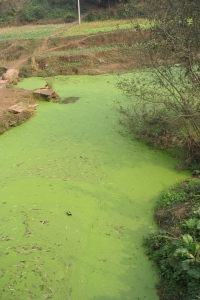

Nowadays many freshwater ecosystems worldwide (e.g. lakes and ponds) suffer from a problem known as eutrophication. Eutrophication is defined as an increase in the nutrient levels in an aquatic ecosystem. Eutrophication is often caused by human agricultural or domestic activity. As a result of the rise in the concentration of nutrients, the number of certain species of primary producers (mainly algae and cyanobacteria) considerably increases. But the success of this small number of fast-growing species has serious effects on other abiotic factors, such as the transparency of the water (eutrophication usually decreases the amount of sunlight arriving at deeper layers of the water) and the availability of oxygen (during the night all plants use oxygen). Thus, while some algae flourish, other species of plants, zooplankton and fish suffer the consequences. The effects of eutrophication may be profound, extending to a severe drop in species diversity, a decrease in water transparency, and the occurrence of algal blooms (exuberant growth of a potentially toxic species of alga or cyanobacterium).

Algal bloom in a small river in China. source: Wikipedia / Felix Andrews